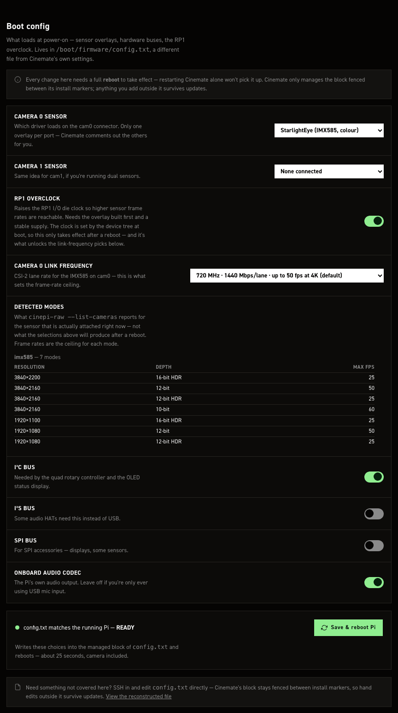

Boot config (config.txt)#
This file can stop the Pi booting
A bad config.txt can leave the camera unbootable, with no way to fix it from the Pi itself.
Read The danger before you save.
/boot/firmware/config.txt declares the camera sensor and switches on the hardware buses and the
RP1 overclock. Edit it from the settings editor's config.txt tab (boot & sensors):
http://cinepi.local:5000/settings-editor/
The tab edits only the block CineMate owns, fenced by two marker lines:
# >>> cinemate-install >>>
...
# <<< cinemate-install <<<
A save rewrites the camera section (between # ---- Camera section ---- and
# ---- End camera section ----) and the dtparam=i2c_arm=on / dtparam=i2s=on /
dtparam=spi=on / dtparam=audio=on / dtoverlay=rp1-overclock lines. Every other line, in the fence or outside it, is untouched. The camera section is replaced wholesale: the installer's five commented example blocks, one per sensor, collapse on the first save to camera_auto_detect= plus your overlay lines.
Hand edits outside the fence survive this page and cinemate-update.sh, which never touches
config.txt. They do not survive a re-run of cinemate-install.sh: configure_boot_config() rewrites the whole file as the managed block alone, copying the old one to the installer's backup directory.

Link frequency for RP1 overclock#
Entries read as MHz, Mbps per lane, then the published 4K frame rate where sensors.json records one, today IMX585 only: 720 MHz · 1440 Mbps/lane · up to 50 fps at 4K (default). IMX283's two entries stop at the Mbps figure. Entries the RP1 is not specified for are suffixed — over RP1 spec.
Switch to a different sensor#
- Connect the sensor to cam0 or cam1 with the Pi powered off.
- Power up and browse to
http://cinepi.local:5000/settings-editor. - Click the config.txt tab.
- Pick your sensor in Camera 0 sensor.
- Pick a second sensor in Camera 1 sensor, or leave it on None connected.
- Click the config.txt button in the top bar to read the reconstructed file.
- Read the danger note below.
- Click Save changes. The Pi writes
config.txtand reboots. - Wait about 25 seconds for the Pi to come back, camera included.
- Reload and check Detected modes lists the sensor you fitted.
The danger#
Saving here reboots immediately: no confirm, no revert, no backup
Save changes on this tab writes /boot/firmware/config.txt and reboots the Pi about 0.4
seconds later, stopping any recording first. There is no confirmation dialog, no countdown, and
no copy of the previous file.
The recovery console behaves differently. Its config.txt editor backs
up the previous file on every save and arms a confirm-or-revert countdown, restoring the old
file and rebooting by itself if you never confirm. That editor is disabled by default: set
system.recovery.allow_config_txt to true first, or there is nothing to fall back on.
A config.txt that stops the Pi booting cannot be fixed from anything running on the Pi. See
The honest limit. Recovery then means pulling the SD
card and editing the file on another machine.
Check the reconstructed file before saving. Sensor overlay and link-frequency picks are the ones that cost you a boot.
Hand edits#
In the Raspberry Pi terminal:
editboot
opens /boot/firmware/config.txt in nano
sudo nano /boot/firmware/config.txt
Uncomment the block for your sensor, comment out the others, then run sudo reboot. The
clean-install default is imx477 on cam0. Nothing validates what you type and nothing reboots for
you.
For a dual-sensor setup, attach both sensors and give each port its own overlay line:
dtoverlay=imx296,cam0
dtoverlay=imx296,mono,cam1
Example of the stock config.txt created by the installer script#
# >>> cinemate-install >>>
# Managed by cinemate-install.sh
# For more options and information see
# http://rptl.io/configtxt
# Some settings may impact device functionality. See link above for details
# Uncomment some or all of these to enable the optional hardware interfaces
dtparam=i2c_arm=on
#dtparam=i2s=on
#dtparam=spi=on
# Enable audio (loads snd_bcm2835)
dtparam=audio=on
# ---- Camera section ----
# Raspberry Pi HQ camera (IMX477, clean-install default on cam0)
camera_auto_detect=1
dtoverlay=imx477,cam0
# Raspberry Pi GS camera (IMX296, 10-bit RAW)
#camera_auto_detect=1
#dtoverlay=imx296,cam0
# OneInchEye (IMX283)
#camera_auto_detect=0
#dtoverlay=imx283,cam0
# StarlightEye color (IMX585)
#camera_auto_detect=0
#dtoverlay=imx585,cam0
# StarlightEye Mono (IMX585 mono)
#camera_auto_detect=0
#dtoverlay=imx585,cam1,mono
# ---- End camera section ----
# Automatically load overlays for detected DSI displays
display_auto_detect=1
# Automatically load initramfs files, if found
auto_initramfs=1
# Enable DRM VC4 V3D driver
dtoverlay=vc4-kms-v3d
max_framebuffers=2
# Don't have the firmware create an initial video= setting in cmdline.txt.
# Use the kernel's default instead.
disable_fw_kms_setup=1
# Run in 64-bit mode
arm_64bit=1
# Disable compensation for displays with overscan
disable_overscan=1
# Run as fast as firmware / board allows
arm_boost=1
# ---- RP1 overclock (Pi 5, optional) ----
# Raises imx585 ClearHDR frame rates. Uncomment and reboot to enable;
# re-comment and reboot to return to stock. See docs/overclocking.md.
#dtoverlay=rp1-overclock
[cm4]
# Enable host mode on the 2711 built-in XHCI USB controller.
# This line should be removed if the legacy DWC2 controller is required
# (e.g. for USB device mode) or if USB support is not required.
otg_mode=1
[cm5]
dtoverlay=dwc2,dr_mode=host
# CFE Hat PCIe 3.0
dtparam=pciex1
dtparam=pciex1_gen=3
[all]
auto_initramfs=1
avoid_warnings=1
disable_splash=1
hdmi_ignore_cec_init=1
dtparam=i2c1=on
dtoverlay=disable-bt
# <<< cinemate-install <<<